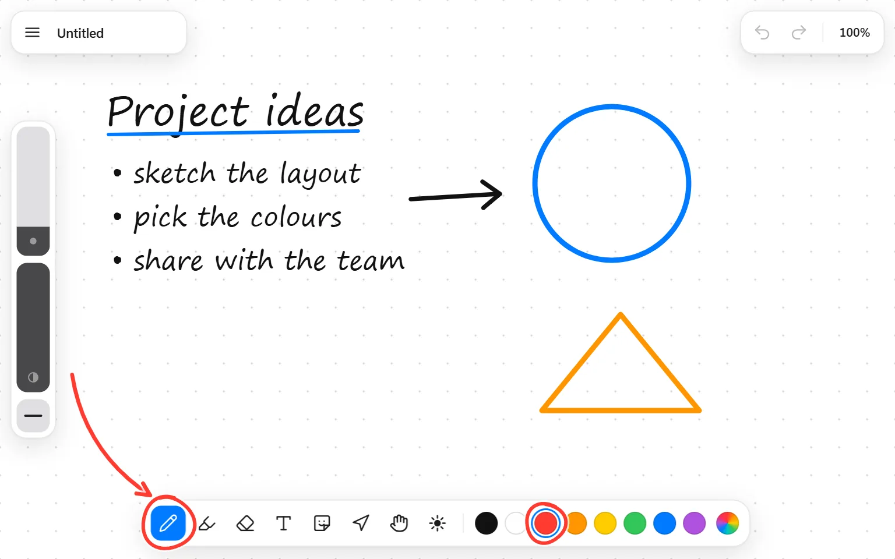

К содержимому
Whiteboard
Возможности
Уроки
Поддержать
GitHub
Русский
العربية
Arabic
中文（普通话）
Chinese (Mandarin)
English
Français
French
Deutsch
German
हिन्दी
Hindi
Magyar
Hungarian
Italiano
Italian
日本語
Japanese
Português
Portuguese
Русский
Russian
Español
Spanish
Türkçe
Turkish
Українська
Ukrainian
Открыть приложение
Освоить можно за несколько минут
Каждый шаг показывает, куда нажать. Пробуйте по ходу.
Полное руководство
Начало работы
Перо и цвета
Маркер, ластик, лазер
Фигуры и цвет
Выделение
Зачёркивание и отмена
Текст
ИИ: оформить, решить, построить
Изображения и стикеры
PDF и листы
Галерея и файлы
Экспорт и отправка
Совместные доски: рисуем вместе
Настройки

1
Выберите инструмент и цвет
На панели внизу — перо, маркер, ластик, текст и другое, а рядом ваши цвета.
2
Настройте кисть
Ползунки слева задают толщину и прозрачность. Кнопка под ними выбирает тип линии.
3
Перемещение
Тяните двумя пальцами или прокручивайте, чтобы двигаться, сводите пальцы или Ctrl + колесо для масштаба. «По содержимому» снова показывает всё.